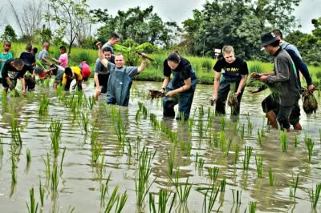
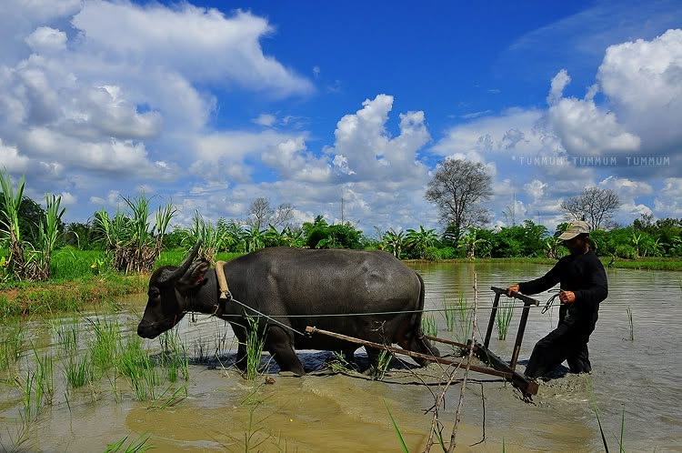
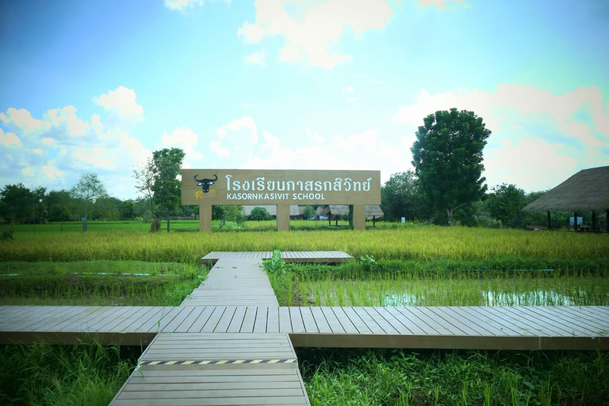

ความเป็นมา
โรงเรียนกาสรกสิวิทย์เป็นแหล่งเรียนรู้ด้านการเกษตรและวิถีชีวิตของเกษตรกรที่เกี่ยวข้องกับการเลี้ยงกระบือและการนำกระบือมาใช้ประโยชน์ในการทำนา
สถานที่แห่งนี้จัดตั้งขึ้นเพื่อเป็นศูนย์ฝึกกระบือในโครงการธนาคารโคกระบือเพื่อเกษตรกรตามพระราชดำริ ส่งเสริมและอนุรักษ์กระบือไทยควบคู่กับการเรียนรู้วิถีเกษตรกรรม
ที่ตั้งและลักษณะพื้นที่
โรงเรียนกาสรกสิวิทย์ตั้งอยู่ในจังหวัดสระแก้ว เป็นพื้นที่ที่จัดสภาพแวดล้อมให้เหมาะกับการเรียนรู้ด้านเกษตรกรรมและการฝึกกระบือ
จังหวัด
สระแก้ว
ประเภท
แหล่งเรียนรู้และท่องเที่ยวเชิงเกษตร
พื้นที่
ประมาณ 110 ไร่
จุดเด่น
กระบือ การทำนา และวิถีเกษตรกรรม
ความสำคัญของกระบือ
กระบือมีความสัมพันธ์กับวิถีชีวิตของเกษตรกรไทยมาอย่างยาวนาน โดยเฉพาะการใช้แรงงานในด้านการเกษตรและการทำนา
โรงเรียนกาสรกสิวิทย์ช่วยให้คนรุ่นใหม่และนักท่องเที่ยวได้เรียนรู้คุณค่าของกระบือ และความสัมพันธ์ระหว่างกระบือกับวิถีชีวิตเกษตรกรไทย
กิจกรรมที่น่าสนใจ
- ชมกระบือและเรียนรู้การฝึกกระบือ
- เรียนรู้วิถีการทำนาและพื้นที่เกษตรกรรม
- เรียนรู้ภูมิปัญญาของเกษตรกร
- ถ่ายภาพบรรยากาศและกิจกรรม
เหมาะสำหรับใคร?
- นักเรียนและนักศึกษาที่สนใจการเกษตร
- ผู้ที่สนใจเรื่องกระบือและวิถีชีวิตเกษตรกร
- ครอบครัวที่ต้องการแหล่งเรียนรู้
- นักท่องเที่ยวที่ชอบการท่องเที่ยวเชิงเรียนรู้